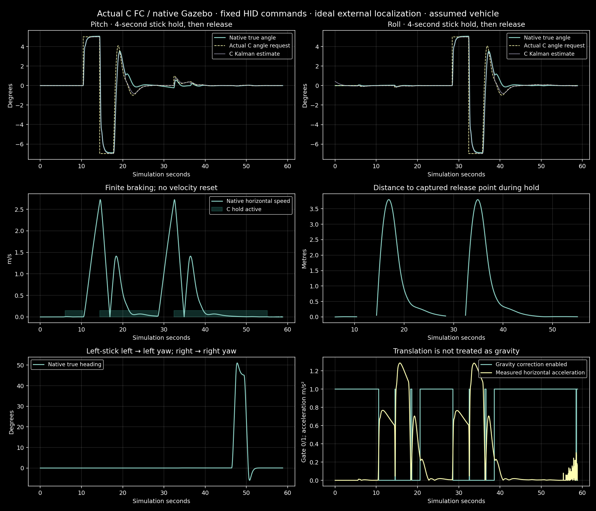

Actual ESP32 C FC host build, native Gazebo physics/cameras and fixed raw Xbox-format commands. No ROS2 or feedback-based test pilot. This is a simulation test, not a real flight.
Horizontal hold and dynamic gravity rejection explicitly use ideal simulated localization. The real IMU/barometer alone cannot supply this. Physical motor arming remains disabled.
Each stick requests 5° for four seconds. On release, the C FC captures the point, counter-tilts to brake, then levels and holds. Stopping is not instantaneous and can include overshoot.
| Axis | Held true angle (5° requested) | Error after 14s settling | Final horizontal speed | Final true angle |
|---|---|---|---|---|
| Pitch | 5.059° | 3.08 cm | 0.018 m/s | 0.024° |
| Roll | 5.066° | 3.11 cm | 0.018 m/s | 0.022° |

The longer test exposed accelerometer translation being mistaken for gravity: the earlier four-second hold reached mean pitch 12.26° and roll 14.70° for a 5° request, then lost control. The updated C estimator retains gyro prediction/covariance and withholds contaminated gravity corrections during measured manual horizontal acceleration.
Original failed video · Failed measurements
The shorter 1.2-second angle-step test also passed. A matching no-localization open-space test did not hold position, as expected; it remains a failed control case, with no hidden positioning helper. Both yaw directions passed against true native heading. Actual source/binary hashes and full assumed parameters are in the summary.
All results, hashes and assumptions · Short test · No-aiding control · Raw predetermined HID · Original 500Hz physics data · C estimator/control trace
Recording starts with the live session, without pressing Save. The home workshop opens its simulation in a new tab. End session stops physics and recording, waits for encoder completion, then closes that flight tab; the home stays open. Browser policy may require manual closing for tabs opened manually.